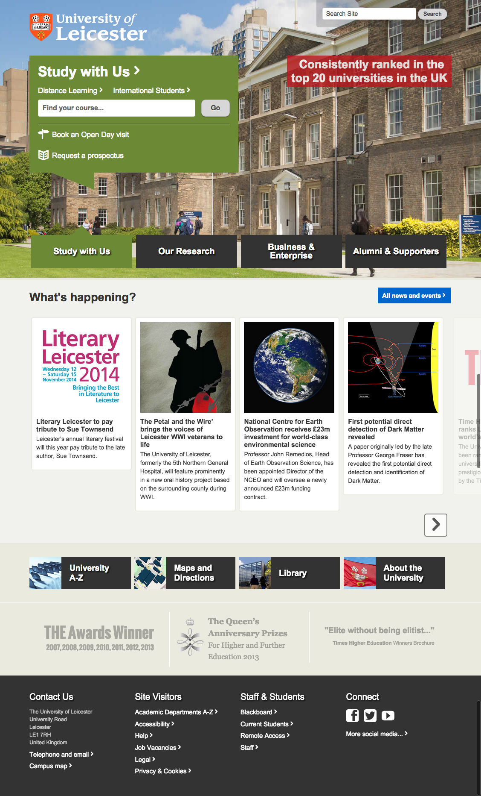
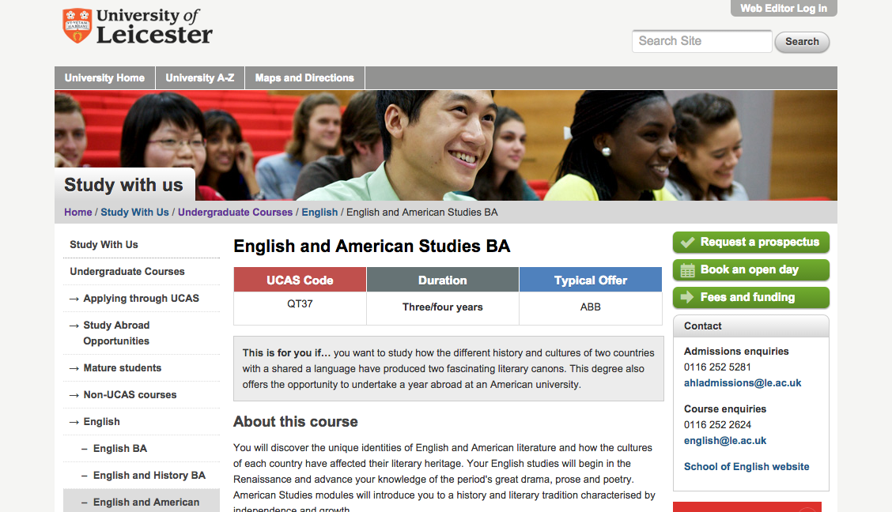
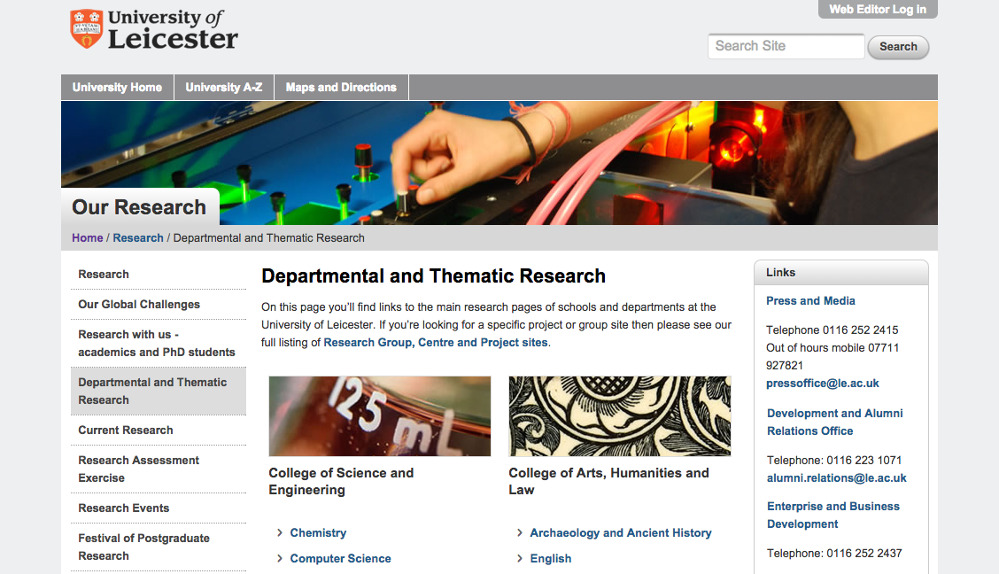
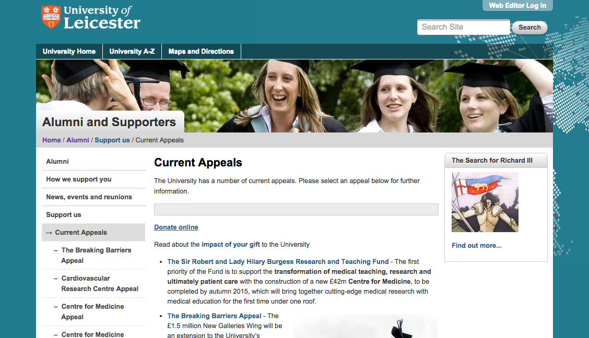
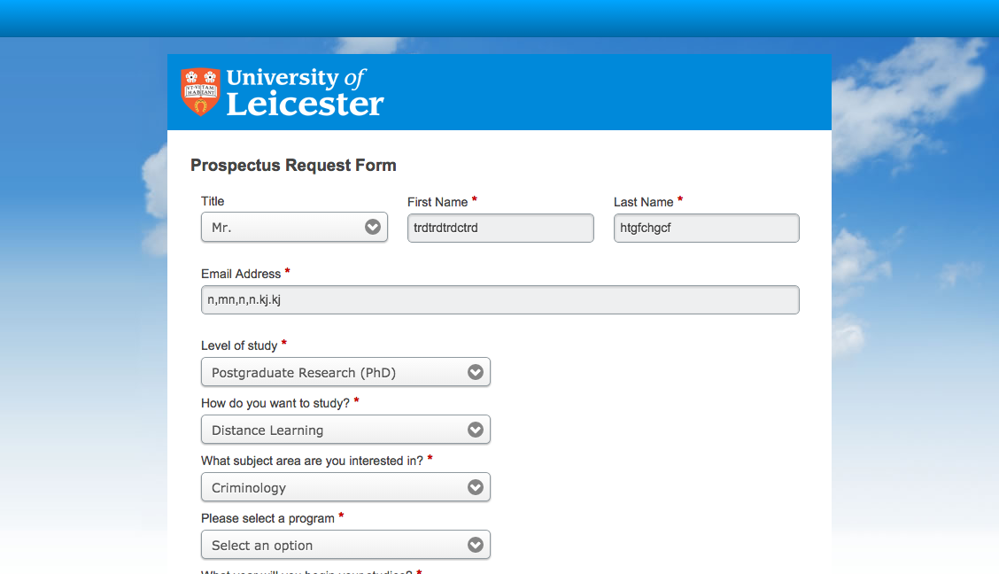
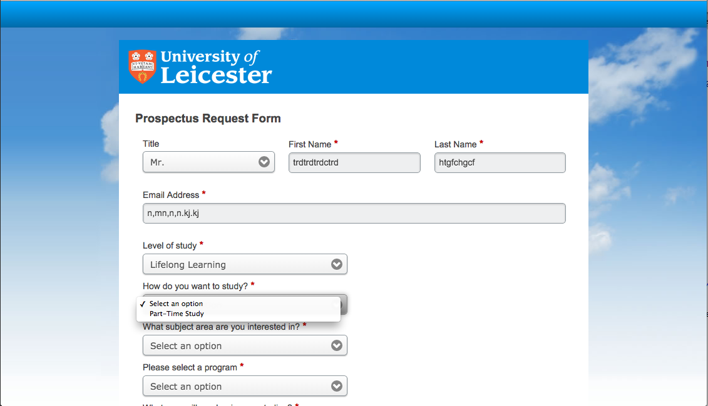
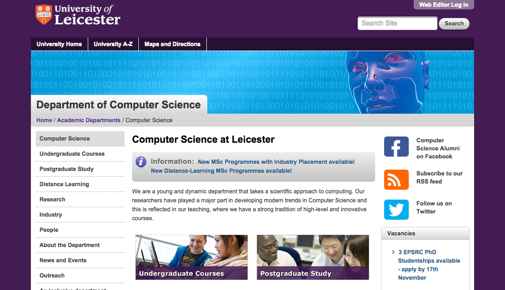
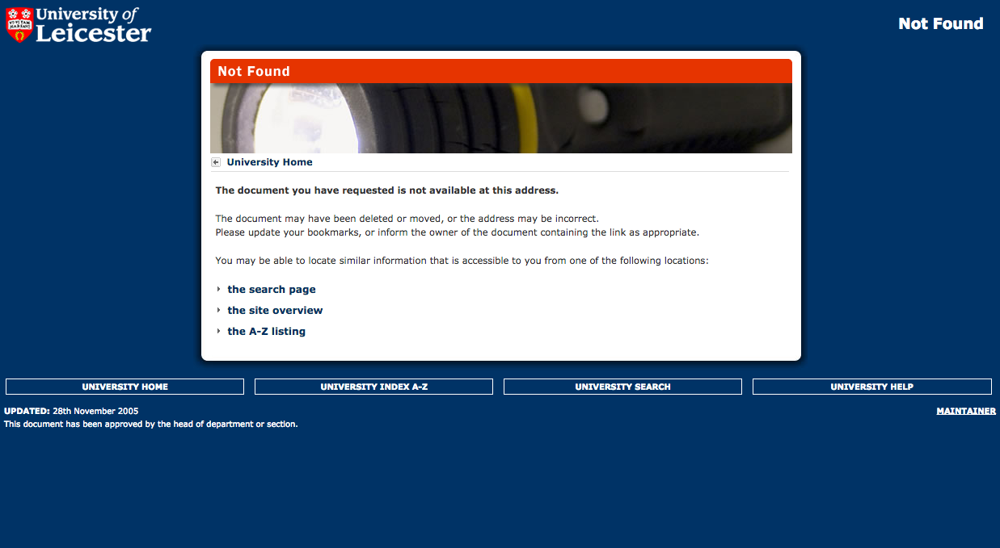
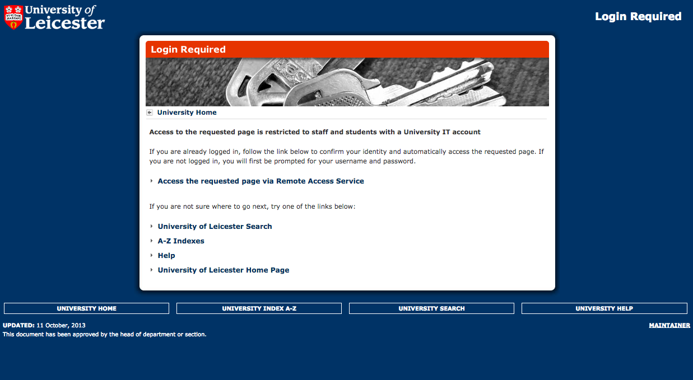
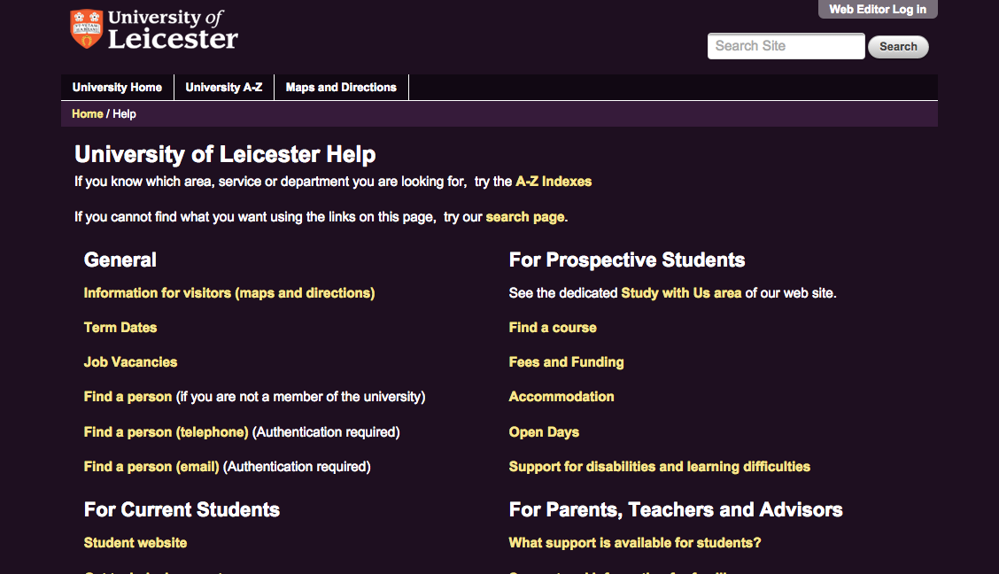

University of Leicester has a new take on the navigation bar. The navigation is the whole page above the fold. At the bottom-most visible part, the tabs function as navigation bar tabs. When one is clicked, the enlarged speech box above displays the name of the label clicked, and has multiple sub-navigation elements within the box. While it is interesting in theory, it fails to appear as a cohesive whole. Most boxes have multiple links, but some, such as the first link (Study with Us) contains a search bar for your course, a link for distance learning, a link for International Students, a link to a page to book an open day visit, and a link to a form to request a prospectus. These are too many different options for a sub-nav menu, since they each take you different places within the site even though they stem from the same main navigation category. Because of this, it is difficult to assess the hierarchy of the website.
This website seems to blend properly with the real applications of the university and the real world. Furthermore, the index file is meant to cater to student new to the university. A lot of the material tested on the index page gives a good glimpse on the colleges life and other opportunities in college. The fluidity and the comprehensive design provides prospective users a better way to community.
User can easily navigate around the website. Easy exits are available in every page. By clicking on the university logo the user has the ability to go back to the homepage. In terms of accessibility, the website loads coherently across different web browsers and different internet devices. However, the background images are not coherently loading on all devices at times.
The website design is at times inconsistent. Color schemes are not coherent throughout the website. For example, color scheme attempts to convey consistency across nav tabs on home page. However, once you click a link, the background of the site appears to have a random color. To maintain consistency, color should be the same as the link tab on the home page. However, it is worthy mentioning the tab headers load smoothly across web browsers and devices
 Error prevention mechanisms throughout the website does a good job of keeping the user in the right direction. However, it fails at times. For example, when submitting a form, error checks are not done in real time and only checks for error after user clicks submit. Otherwise, as mentioned, red stars clearly indicate which fields in a form are necessary to be filled out. Also, in some drop down menus in forms, user is given only one opiton, therefore, a drop down is not necessary for choosing one item.
 Good labs and link descriptions are available throughout the website. When directing the user to a different website, the link description clearly states which website it will be redirecting to. Furthermore, any page deeper in the hierarchy from home page is "constructed" with consistency, but does not at all read that way through the design.
Searching in the university website helps novice users catch up with the expert users. The search within the site is powered by Google and yields great results. Therefore, a novice user can easily find where certain parts of the website is. Furthermore, the university comes up easily on search engine research results with an eloquent and informative title.


The homepage sports a showy design. However, as the user explores sub pages, the website takes on more of a minimalistic design. To be consistent throughout, the homepage should also adopt a minimalist design or rock a showy design in other pages. Furthermore, while there are progressive levels of detail to the site, the hierarchy is difficult to follow one page in from the home page.
The website does a good job of preventing the user from committing errors. For example, when the user attempts to access contents that requires logging in, proper error messages with elaborate descriptions are shown to the user. Furthermore, the error pages redirect user to a proper page. Therefore, at all times the user is not lost in the website.
 Help and documentation is available for all types of users that visit the site (prospective and current students, staff, faculty, etc.). The user is able to find help ranging from help navigating the site to help on applying to the college. Furthermore, a form and an email address of the webmaster is available for help or feedback. The university also has a social media prescience which helps students find it.
